Mascotas, corpóreos e imagen deportiva
Un personaje se recuerda antes que un logotipo. Creamos mascotas y personajes de marca, y elementos visuales y corpóreos para equipos, asociaciones y eventos.
Para marcas, clubes de fútbol y otros deportes, asociaciones y eventos.
Cuéntanos quién es tu público y dónde quieres ver al personaje o al corpóreo.
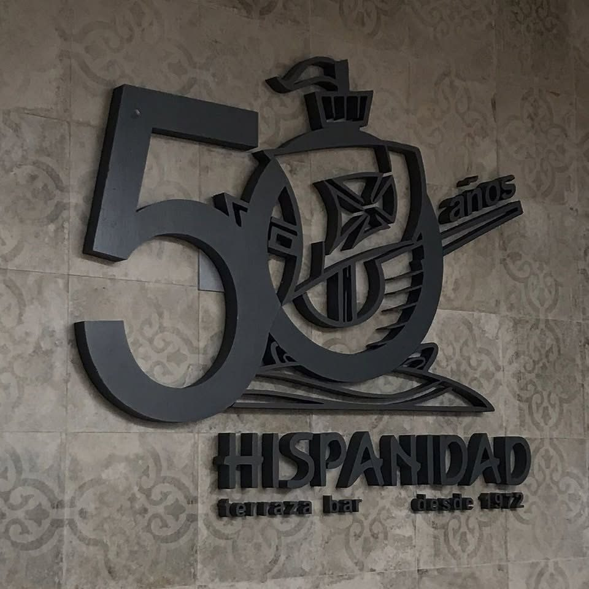
Una cara para tu marca
Las mascotas y los personajes de marca refuerzan la identidad, se recuerdan con facilidad y conectan con públicos muy distintos, de los más pequeños a la afición de toda la vida.
Un buen personaje se piensa para usarse en muchos sitios: en una camiseta, en un cartel, en redes sociales, en un evento o en volumen. Por eso lo diseñamos pensando desde el principio en todas sus aplicaciones.
Tres formas de dar presencia a tu marca
Mascotas corporativas
Personajes con personalidad propia para empresas, marcas, asociaciones y campañas.
Elementos corpóreos
Letras, escudos o figuras en volumen para sedes, campos, pabellones, stands y eventos.
Imagen para clubes y entidades
Recursos gráficos de temporada, material para partidos y eventos, y comunicación para la afición.
Recursos para campañas y eventos
Ilustraciones y elementos identificativos que acompañan al personaje en cada pieza.
Escudos y marcas de terceros
Solo trabajamos con escudos, nombres y marcas de clubes o entidades que nos encargan el trabajo o que tienen autorización para usarlos.
Trabajos realizados
Algunos trabajos reales de este servicio. Pulsa una foto para verla en grande.


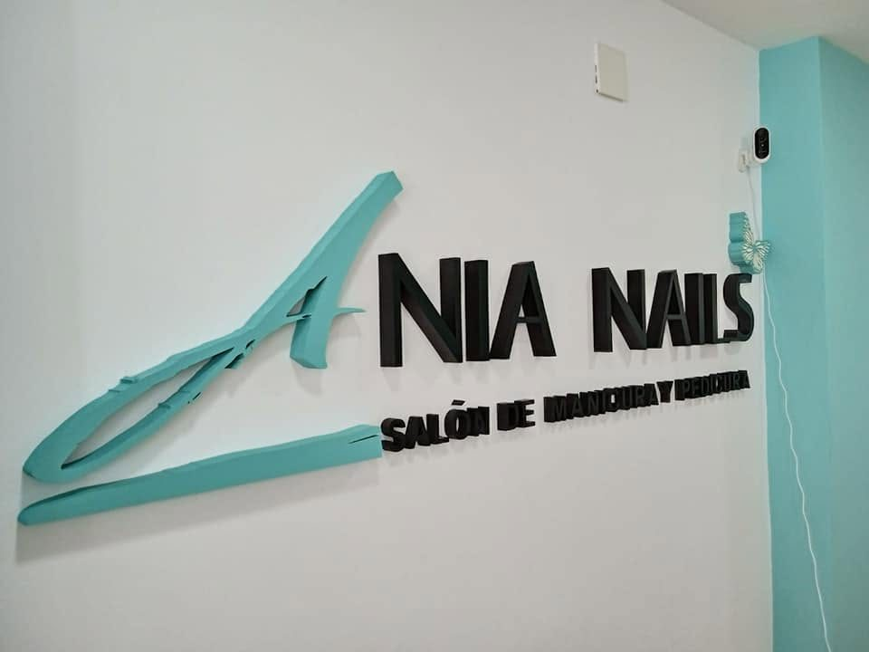

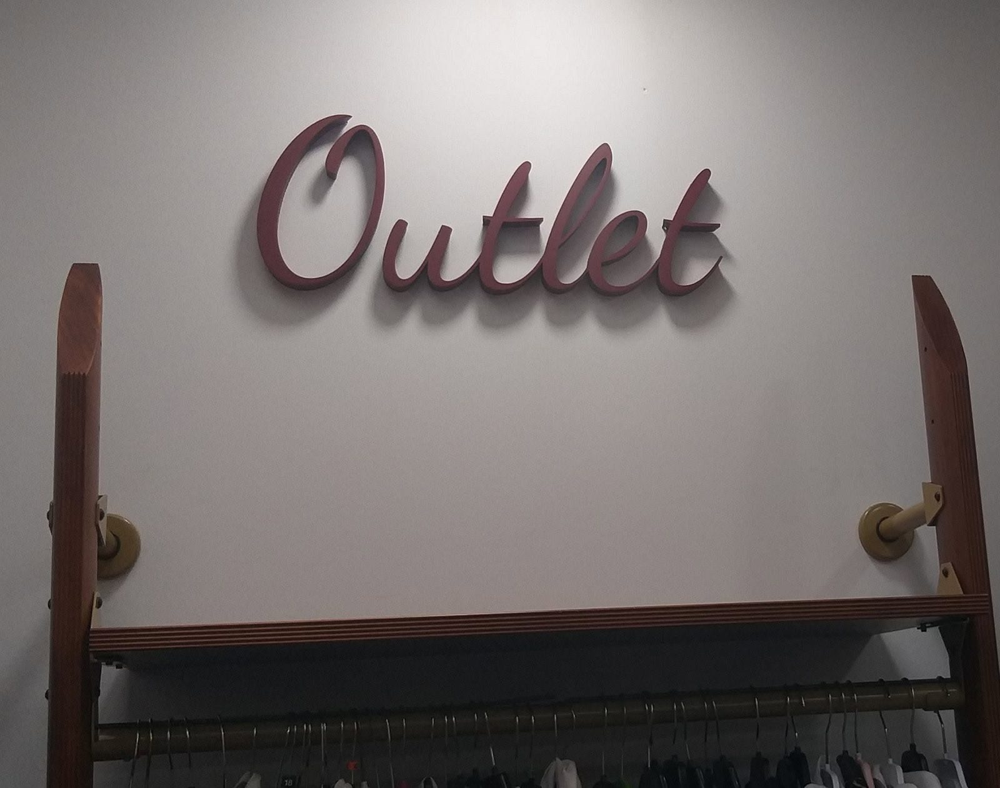

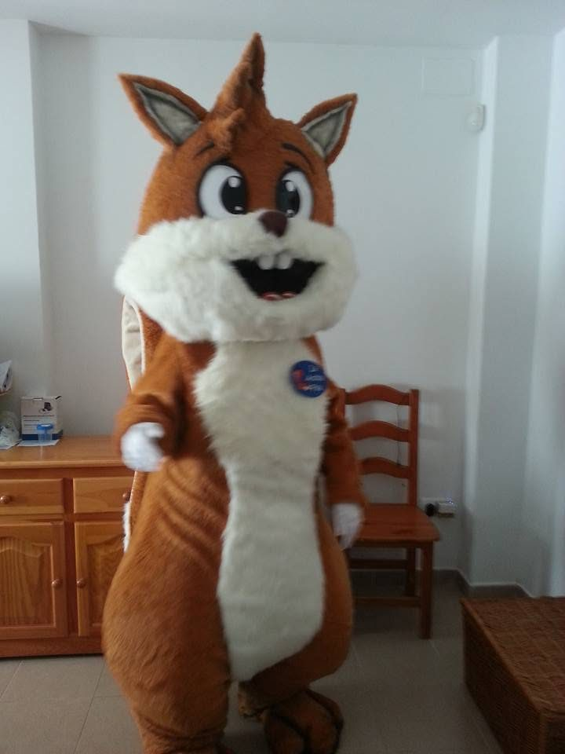

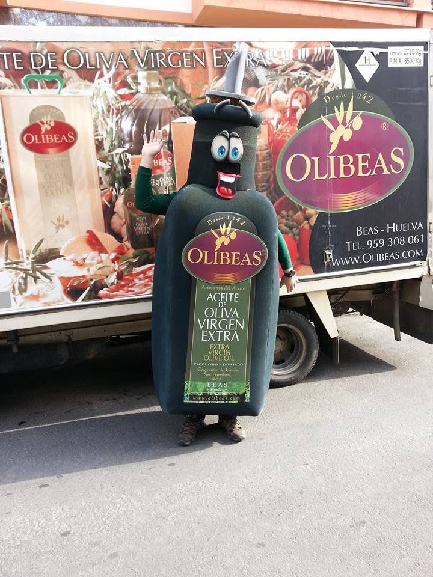

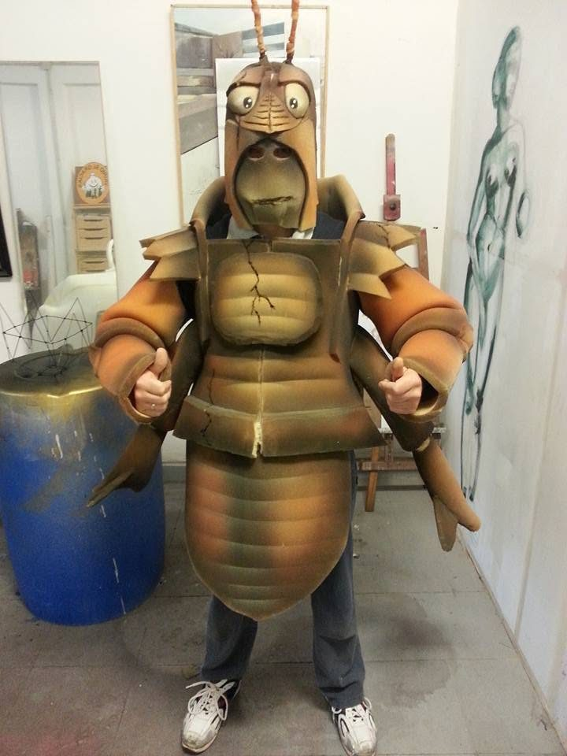

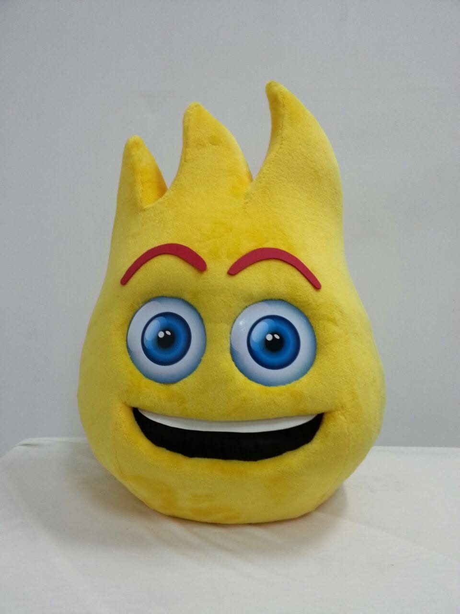

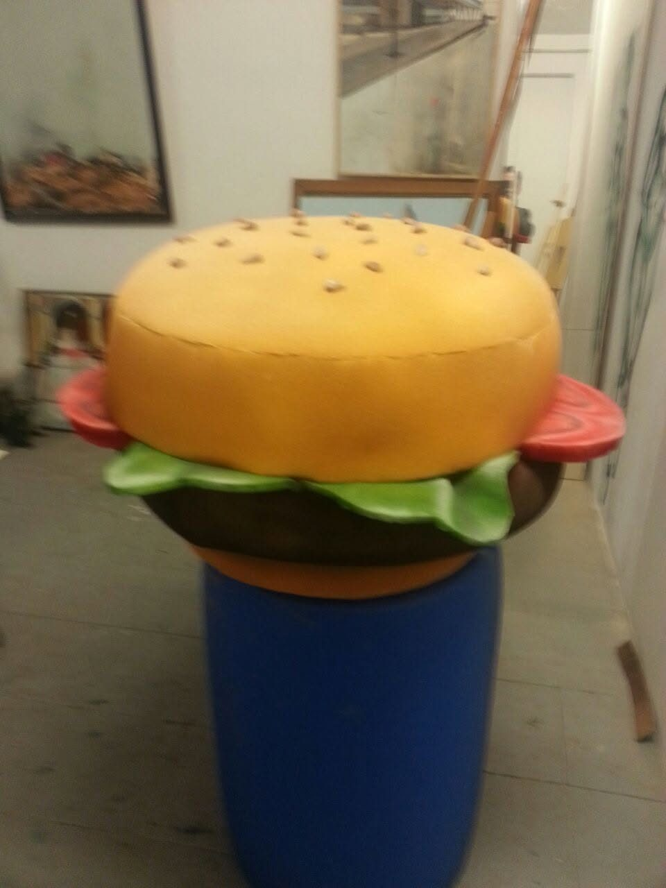

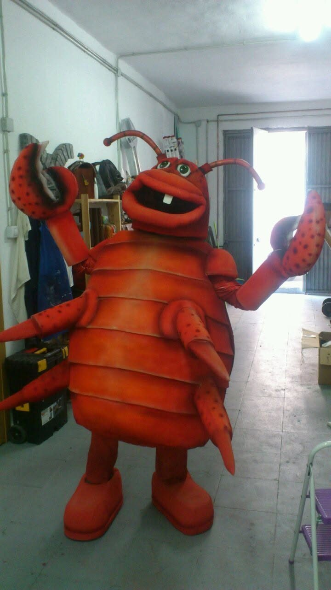

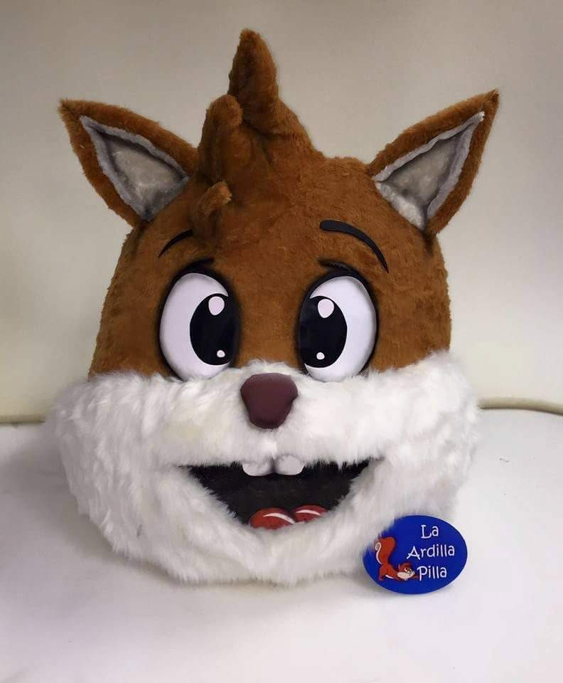

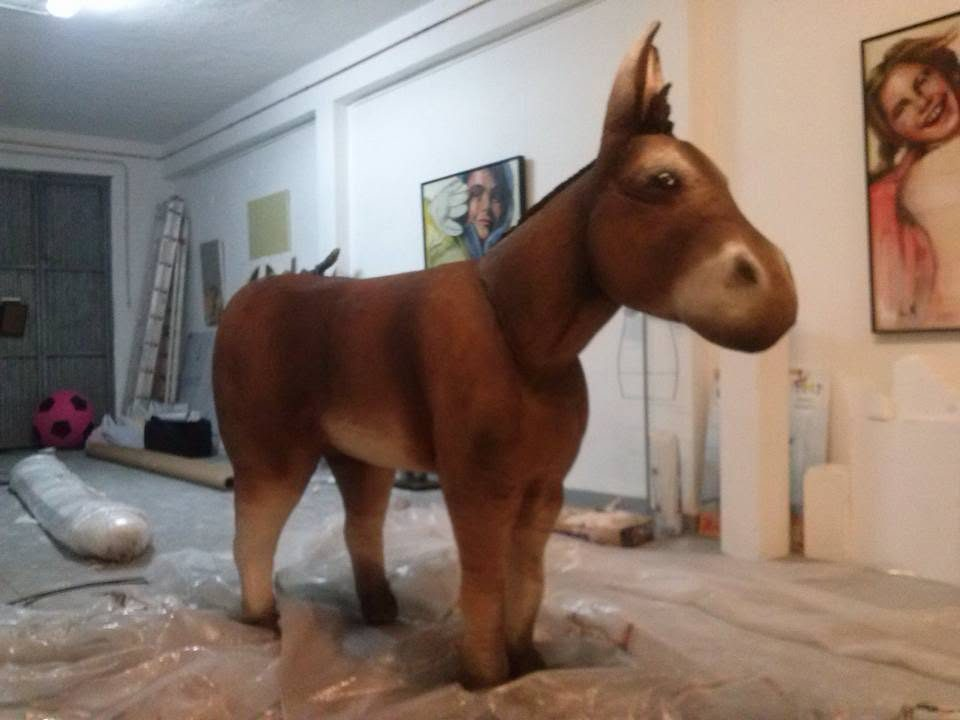
A quién puede interesar
- Equipos de fútbol
- Clubes de otros deportes
- Asociaciones
- Marcas y empresas
- Eventos
Servicios relacionados
Hablemos de tu proyecto
Te respondemos con una propuesta adaptada a lo que necesitas.